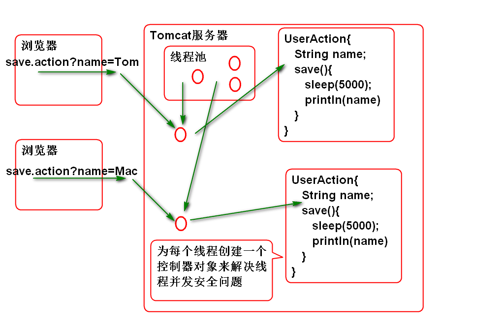

Hibernate 提供实体对象的CRUD方法, 这些方法会自动生成相应的SQL, 在执行DML方法时候需要使用 事务:
案例:
@Test
public void testSaveUser(){
Transaction tx = session.beginTransaction();
long now=System.currentTimeMillis();
//创建User对象,调用save()保存到数据库中
User user=new User(
1,"Tom",5,100.0,new Timestamp(now));
session.save(user);
tx.commit();
}
@Test
public void testGet(){
//测试 查询方法 get
int id=1;
User user=
(User)session.get(User.class, id);
System.out.println(user);
}
@Test
public void testUpdate(){
Transaction tx=session.beginTransaction();
User user=(User)session.get(
User.class, 1);
user.setName("范传奇");
session.update(user);
user=(User)session.get(
User.class, 1);
System.out.println(user);
tx.commit();
}
@Test
public void testDelete(){
Transaction tx=session.beginTransaction();
User user=(User)session.get(
User.class, 1);
System.out.println(user);
session.delete(user);
System.out.println(user);
tx.commit();
}
@Test
public void testAddDat(){
long now=System.currentTimeMillis();
Transaction tx = session.beginTransaction();
User user=new User(
1,"Tom",20,200.0,new Timestamp(now));
session.save(user);
user=new User(
2,"Jerry",5,100.0,new Timestamp(now));
session.save(user);
user=new User(
3,"Mac",20,200.0,new Timestamp(now));
session.save(user);
tx.commit();
}
Hibernate中不用使用SQL, 查询使用可以使用HQL, 其语法与SQL类似:
案例:
@Test
public void testFindAll(){
//sql: select * from t_user
//HQL: from User
//1. 如果是查询全部属性数据,
// 则可以省略select子句
//2. 表名替换为其对应的实体类名
//3. 列名替换为其对应的实体属性名
String hql="from User";
//利用Query接口执行HQL
Query query=
session.createQuery(hql);
List<User> list=query.list();
for (User user : list) {
System.out.println(user);
}
}
@Test
public void testFindByAge(){
//sql: select * from t_user
// where t_age=?
//hql: from User where age=?
String hql="from User where age=?";
Query query=session.createQuery(hql);
query.setInteger(0, 20);
List<User> list=query.list();
for (User user : list) {
System.out.println(user);
}
}
@Test
public void testFindMapList(){
//sql: select t_id, t_name
// from t_user where t_age=?
// order by t_name
//hql: select new map(id as id,
// name as name)
// from User where age=?
// order by name
String hql="select new map(id as id, "
+ "name as name) "
+ "from User where age=:age "
+ "order by name";
Query query=session.createQuery(hql);
//按照名称替换参数
query.setInteger("age", 20);
List<Map<String, Object>> list=
query.list();
for (Map<String, Object> map : list) {
System.out.println(map);
}
}
Hibernate 管理的对象有三种生存周期状态:
测试持久状态:
@Test
public void testSave(){
long now=System.currentTimeMillis();
Transaction tx=session.beginTransaction();
User user=new User(5, "范老师",
20, 3000.0, new Timestamp(now));
//临时状态
session.save(user);
//持久状态
user.setSalary(100.0);
user.setAge(50);
//清理session,执行全部SQL
session.flush();
tx.commit();
//session.evict(object);
}
测试游离状态:
@Test
public void testEvict(){
long now=System.currentTimeMillis();
Transaction tx=session.beginTransaction();
User user=new User(
6, "李老师", 20, 200.0,
new Timestamp(now));
session.save(user);
//持久状态
session.flush();//执行可能的sql
session.evict(user);//将user从session中清除
//游离状态
user.setAge(50);
session.flush();//执行可能的sql
tx.commit();
}
测试各种状态:
@Test
public void testLiftCircle(){
Transaction tx=session.beginTransaction();
User user=
(User)session.load(User.class,1);
System.out.println(user);
//持久状态
user.setAge(50);
session.flush();
session.clear();
//游离状态
user.setAge(30);
session.flush();
session.update(user);
//持久状态
session.flush();
session.delete(user);
//临时状态
System.out.println(user);
tx.commit();
}
Spring 提供了一个包 spring-orm 对 Hibernate进行支持, 简化了Hibernate的对象管理:
spring-orm 依赖 DataSource
整合步骤:
导入 spring-orm 和 DataSource
<!--添加alibaba的druid连接池依赖 暂且可以将DRUID理解为增强版DBCP -->
<dependency>
<groupId>com.alibaba</groupId>
<artifactId>druid</artifactId>
<version>1.0.23</version>
</dependency>
<dependency>
<groupId>org.springframework</groupId>
<artifactId>spring-orm</artifactId>
<version>4.1.6.RELEASE</version>
</dependency>
注意: spring-orm 的版本要与 spring 的版本一致
添加数据库连接参数文件 conf/jdbc.properties
jdbc.driver=com.mysql.jdbc.Driver
jdbc.url=jdbc:mysql://localhost:3306/ssh
jdbc.username=root
jdbc.password=root
jdbc.initialSize=5
jdbc.maxActive=50
jdbc.minIdle=0
jdbc.maxWait=60000
jdbc.druid.filters=
jdbc.timeBetweenLogStatsMillis=60000
配置连接池 conf/spring-pool.xml
<?xml version="1.0" encoding="UTF-8"?>
<beans default-lazy-init="true"
xmlns="http://www.springframework.org/schema/beans"
xmlns:p="http://www.springframework.org/schema/p"
xmlns:xsi="http://www.w3.org/2001/XMLSchema-instance"
xmlns:context="http://www.springframework.org/schema/context"
xmlns:tx="http://www.springframework.org/schema/tx"
xmlns:mvc="http://www.springframework.org/schema/mvc"
xsi:schemaLocation="
http://www.springframework.org/schema/beans
http://www.springframework.org/schema/beans/spring-beans-4.1.xsd
http://www.springframework.org/schema/mvc
http://www.springframework.org/schema/mvc/spring-mvc-4.1.xsd
http://www.springframework.org/schema/tx
http://www.springframework.org/schema/tx/spring-tx-4.1.xsd
http://www.springframework.org/schema/context
http://www.springframework.org/schema/context/spring-context-4.1.xsd" >
<!-- 加载jdbc.properties文件(一般加载多个文件时
可考虑使用此方式) ,回顾使用<util:properties>-->
<bean id="propertyConfigurer" class="org.springframework.beans.factory.config.PropertyPlaceholderConfigurer">
<property name="locations">
<list>
<value>classpath:conf/jdbc.properties</value>
</list>
</property>
</bean>
<!-- 配置DRUID连接池(这个连接池的说明:
http://github.com 在搜索栏输入druid查找)
这个stat-filter 是一个可选的配置
-->
<bean id="stat-filter" class="com.alibaba.druid.filter.stat.StatFilter"
lazy-init="true">
<description>状态过滤器</description>
<!-- 通过slowSqlMillis用来配置SQL慢的标准 -->
<property name="slowSqlMillis" value="3000" />
<!-- 以日志形式输出执行效率慢的SQL -->
<property name="logSlowSql" value="true" />
<!-- 通过mergeSql属性，合并SQL -->
<property name="mergeSql" value="true" />
</bean>
<!--配置DruidDataSource连接池,其中可通过${key}获取properties文件中的值 -->
<bean id="dataSource" class="com.alibaba.druid.pool.DruidDataSource"
destroy-method="close" init-method="init" lazy-init="true">
<property name="driverClassName" value="${jdbc.driver}" />
<property name="url" value="${jdbc.url}" />
<property name="username" value="${jdbc.username}" />
<property name="password" value="${jdbc.password}" />
<!-- 初始化连接大小 -->
<property name="initialSize" value="${jdbc.initialSize}" />
<!-- 连接池最大数量 -->
<property name="maxActive" value="${jdbc.maxActive}" />
<!-- 连接池最小空闲 -->
<property name="minIdle" value="${jdbc.minIdle}" />
<!-- 获取连接最大等待时间 -->
<property name="maxWait" value="${jdbc.maxWait}" />
<!--配置了maxWait之后，缺省启用公平锁，并发效率会有所下降，如果需要可以通过配置useUnfairLock属性为true使用非公平锁。 -->
<property name="useUnfairLock" value="true" />
<property name="defaultReadOnly" value="false" />
<!-- 通过配置StatFilter,打开监控台统计功能 -->
<property name="proxyFilters">
<list>
<ref bean="stat-filter" />
</list>
</property>
<property name="filters" value="${jdbc.druid.filters}" />
</bean>
</beans>
配置 Hibernate, conf/spring-hibernate.xml
<?xml version="1.0" encoding="UTF-8"?>
<beans default-lazy-init="true"
xmlns="http://www.springframework.org/schema/beans"
xmlns:p="http://www.springframework.org/schema/p"
xmlns:xsi="http://www.w3.org/2001/XMLSchema-instance"
xmlns:context="http://www.springframework.org/schema/context"
xmlns:tx="http://www.springframework.org/schema/tx"
xmlns:mvc="http://www.springframework.org/schema/mvc"
xsi:schemaLocation="
http://www.springframework.org/schema/beans
http://www.springframework.org/schema/beans/spring-beans-4.1.xsd
http://www.springframework.org/schema/mvc
http://www.springframework.org/schema/mvc/spring-mvc-4.1.xsd
http://www.springframework.org/schema/tx
http://www.springframework.org/schema/tx/spring-tx-4.1.xsd
http://www.springframework.org/schema/context
http://www.springframework.org/schema/context/spring-context-4.1.xsd" >
<!-- 管理 Hibernate4 SessionFactory -->
<bean id="sessionFactory" class="org.springframework.orm.hibernate4.LocalSessionFactoryBean">
<property name="dataSource"
ref="dataSource"/>
<property name="hibernateProperties">
<props>
<prop key="hibernate.dialect">
org.hibernate.dialect.MySQL5Dialect
</prop>
<prop key="hibernate.show_sql">
true
</prop>
<prop key="hibernate.format_sql">
true
</prop>
</props>
</property>
<property name="mappingLocations"
value="classpath:mapping/*.xml"/>
</bean>
<!-- 配置HibernateTemplate -->
<bean id="hibernateTemplate" class="org.springframework.orm.hibernate4.HibernateTemplate">
<property name="sessionFactory"
ref="sessionFactory"/>
</bean>
<!-- 配置事务管理器 -->
<bean id="txManager" class="org.springframework.orm.hibernate4.HibernateTransactionManager">
<property name="sessionFactory"
ref="sessionFactory"/>
</bean>
<!-- 配置声明式事务 -->
<tx:annotation-driven
transaction-manager="txManager"/>
</beans>
测试:
public class ORMTestCase {
ClassPathXmlApplicationContext ctx;
SessionFactory factory;
@Before
public void init(){
ctx=new ClassPathXmlApplicationContext(
"conf/spring-pool.xml",
"conf/spring-hibernate.xml");
factory = ctx.getBean("sessionFactory",
SessionFactory.class);
}
@After
public void destory(){
factory.close();
ctx.close();
}
@Test
public void testSession(){
Session session=factory.openSession();
User user = (User)session.get(
User.class, 2);
System.out.println(user);
session.close();
}
}
HibernateTemplate 天生就是为DAO设计的! 天生为数据持久层设计. HibernateTemplate 封装了Session对象, 提供了实体对象的CRUD操作, 简单的替代 Session的功能.
使用 HibernateTemplate:
声明Dao接口
public interface UserDao {
void saveUser(User user);
}
实现Dao接口:
@Repository("userDao")
public class UserDaoImpl implements UserDao {
@Resource(name="hibernateTemplate")
private HibernateTemplate template;
@Transactional
public void saveUser(User user) {
template.save(user);
}
}
配置dao组件扫描 spring-hibernate.xml
<!-- 扫描dao组件 -->
<context:component-scan base-package="cn.tedu.dao"/>
测试:
public class DaoTest {
ClassPathXmlApplicationContext ctx;
UserDao dao;
@Before
public void init(){
ctx = new ClassPathXmlApplicationContext(
"conf/spring-pool.xml",
"conf/spring-hibernate.xml");
dao = ctx.getBean(
"userDao",UserDao.class);
}
@After
public void destory(){
ctx.close();
}
@Test
public void testSave(){
long now = System.currentTimeMillis();
User user=new User(8, "熊大",
8, 200.0, new Timestamp(now));
dao.saveUser(user);
}
}
SSH整合显示全部用户列表的原理:

实现步骤:
编写 持久层方法 UserDao
List<User> findAllUsers();
实现持久层方法 UserDaoImpl
@Transactional
public List<User> findAllUsers() {
String hql = "from User";
return (List<User>)template.find(hql);
}
测试 DaoTest:
@Test
public void testFindAllUsers(){
List<User> list=dao.findAllUsers();
for (User user : list) {
System.out.println(user);
}
}
编写业务层接口:
public interface UserService {
List<User> list();
}
实现业务层接口
@Service("userService")
@Transactional
public class UserServiceImpl
implements UserService{
@Resource
private UserDao userDao;
public List<User> list() {
return userDao.findAllUsers();
}
}
编写控制器类:
@Controller
@Scope("prototype")
public class UserAction {
@Resource
private UserService userService;
private List<User> users =
new ArrayList<User>();
public List<User> getUsers() {
return users;
}
public void setUsers(List<User> users) {
this.users = users;
}
public String list(){
users = userService.list();
return "success";
}
}
编写 /WEB-INF/jsp/list.jsp
<%@ page
contentType="text/html; charset=utf-8"
pageEncoding="utf-8"%>
<%@taglib prefix="c"
uri="http://java.sun.com/jsp/jstl/core"%>
<!DOCTYPE html>
<html>
<head>
<meta charset="utf-8">
</head>
<body>
<h1>员工管理</h1>
<div>
<table>
<tr>
<th>编号</th>
<th>姓名</th>
<th>年龄</th>
<th>薪资</th>
</tr>
<c:forEach items="${users}"
var="user">
<tr>
<td>${user.id}</td>
<td>${user.name}</td>
<td>${user.age}</td>
<td>${user.salary}</td>
</tr>
</c:forEach>
</table>
</div>
</body>
</html>
需要用到 JSTL 标签库,需要导入jstl
<dependency>
<groupId>jstl</groupId>
<artifactId>jstl</artifactId>
<version>1.2</version>
</dependency>
配置 struts.xml
<package name="user" namespace="/user"
extends="json-default">
<action name="list" class="userAction"
method="list">
<result name="success">
/WEB-INF/jsp/list.jsp
</result>
</action>
</package>
开启业务层和控制器组件扫描:
<context:component-scan
base-package="cn.tedu.service"/>
<context:component-scan
base-package="cn.tedu.action"/>
部署测试
http://localhost:8080/ssh/user/list.action
原理:


面试题目: Struts2 中如何解决控制器并发安全性问题的?
答案: Struts2控制器是有状态的! 为每个用户请求创建一个控制器对象,
来解决并发安全问题, 在SSH整合时候使用@Scope("prototype")
面试题目: Spring MVC 中如何解决控制器并发安全性问题的?
答案: 保持控制器是无状态的Bean, 就是:不要在控制器中定义读写变量